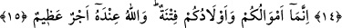
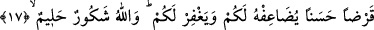

KENDİ İYİLİĞİNİZE
OLARAK HARCAYIN
14. Ey îman edenler! Eşlerinizden ve çocuklarınızdan size düşman olanlar da
vardır; onlardan sakının. Ama affeder, kusurlarını başlarına kakmaz, örterseniz,
bilin ki, Allah çok bağışlayan, çok esirgeyendir.
15. Doğrusu mallarınız ve çocuklarınız sizin için bir imtihandır: Büyük mükâfat
ise Allah’ın yanındadır.
16. O halde gücünüz yettiğince Allah’a isyandan kaçının. Dinleyin, itâat edin,
kendi iyiliğinize olarak harcayın. Kim nefsinin cimriliğinden korunursa işte onlar
kurtuluşa erenlerdir.
17. Eğer Allah’a (rızâsı uğruna) ödünç verirseniz, Allah onu sizin için kat kat
arttırır ve sizi bağışlar. Allah çok mükâfat verendir, cezâ vermekte acele
etmeyendir.
18. Görülmeyeni ve görüleni bilendir. Üstündür, hikmet sâhibidir.
“Ey” ihlâsla “îman edenler, eşlerinizden ve çocuklarınızdan...” Âyetteki “ezvâc”
kelimesi, “zevc” kelimesinin çoğulu olup karıya ve kocaya şâmildir. el-Lübab’ta yer
alan açıklamalar ilerde gelecektir. “Evlad” kelimesi de “veled” kelimesinin çoğulu olup
erkek ve kız çocuklarına şâmildir. “Size düşman olanlar da vardır.” Onların her ne
kadar açıkça bir düşmanlıkları olmasa da sizleri Allah’a itâatten alıkoyarlar. Çünkü
düşman bizâtihi düşman olmaz o ancak fiili ile, yaptığı hareketle düşman olur. İnsanın
eşi ve çocuğu düşmanın yaptığı hareketleri yaptıklarında düşman olmuş olur. Bir kul ile
onun ibâdet ve itâati arasına girip engel olmaktan daha çirkin bir fiil yoktur. Âyet-i
kerimeyi “sizleri Allah’a itâatten alıkoyan düşmanlar…” şeklinde anlamak mümkün
olduğu gibi “din ya da dünya işlerinde sizinle çekişen düşmanlar” şeklinde anlamak da